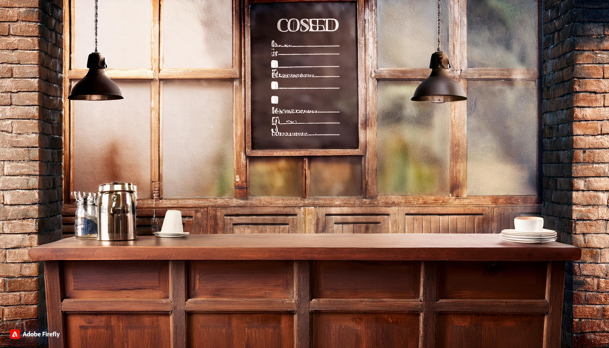

GAME OVER
História e Programação:
Luks Montalti
Imagens:
Adobe Firefly
Qualquer semelhança serão meras coincidências
© Direitos reservados a seus criadores
ATENÇÃO!: História fictícia e meio maluquinha!
Esses dias, fiquei sabendo de um caminho secreto para encontrar o café secreto, o “Golden Cappuccino”.
Claro que fiquei tentado para encontrar essa iguaria que vale mais do que dinheiro.
Vamos ver se chegamos lá?
Acho que você pensa pouco de mim, hein? Mas, de qualquer forma, lá vou eu.
Pego meu carro e sigo na rodovia, chegando lá vejo duas placas, qual seguir?
Chego até lá, não sei porquê, ao sair do aeroporto vem um taxista em minha direção, usando termos desconhecidos, como “Gud Morningue”, “Evenim” e “Uere are iu from?”, não entendo inglês, mas para me defender, mando um “Ah, vai se...”, espera, onde quero chegar com isso?
Continuo a direita, viro no retorno mencionado antes.
Só há um caminho, através de uma estrada de Terra no meio do mato, entro.
Começo a sentir o cheiro do orvalho e da grama, e sem mais nem menos, o carro morre sem explicações, e agora?
É claro que esse era o caminho!
Viro para a esquerda na direção da placa. Dirijo por 45 minutos em uma estrada de terra e chego a lugar nenhum.
Parabéns, não acredito que você caiu nessa!
Entro no Taxi, novamente o motorista conversa comigo através de palavras desconhecidas, ele dá uma pausa, olha para mim, e sei que está esperando pelo meu destino, reproduzo ruídos sem sentido para mim, ele responde “Okay!” e começa a dirigir.
Não faço ideia para onde estamos indo.
Corro de volta para o aeroporto, me escondo no banheiro, todos falam essa língua alienígena
De volta às igrejas, você finalmente encontra o mapa antigo. Agora, para o Amazonas!

Agora me dou conta, sou apenas um idiota, envolto de pensamentos inexistentes, em um carro no meio de uma estrada de Terra, ido sabe se lá para onde, será que valerá a pena?
Derrepente o carro para e há frente existem duas trilhas, sinto o cheiro de café no ar, é por aqui!
A trilha à direita termina em riacho e uma área pantanosa.
Apesar da bela vista, não há sinais de nada aqui.
A trilha à esquerda me leva a uma cafeteria escondida, com as paredes externas nas cores branco e rosa, obviamente já pretejados pelo tempo e pela umidade, um calafrio percorre minha coluna, segundo ápos segundo, vertebra por vertebra.
Há duas portas bem diferentes.
Por qual eu deveria entrar?
Lá fui eu.
Ao entrar ambas as portas davam ao mesmo lugar, um saguão bem menor do que imaginava, com detalhes principalmente em madeira escura e alguns tons de roxo e rosa.
Avistei o balcão, há um garçonete logo atrás me observando de canto de olho.

Uma escolha um tanto quanto ousada.
Mesmo assim, ao entrar ambas as portas davam ao mesmo lugar, um saguão bem menor do que imaginava, com detalhes principalmente em madeira escura e alguns tons de roxo e rosa.
Avistei o balcão, há um garçonete logo atrás me observando de canto de olho.
Me aproximo com passos calmos, a moça parece estar enojada com minha presença, mas não me importo.
Finjo ler o cardápio por alguns segundo (não vejo o Golden Cappuccino ali).
Tomo coragem e peço: “Moça, me vê... um Golden Cappuccino?”
Ela dá um sorrisinho
Ela dá uma pausa dramática, suspira calmamente e me responde:
“Está fora do cardápio desde ontem!”
... ... ...
Saiu de forma sutil, como se nada tivesse acontecendo, me abaixo na pia, a água está gelada, percebo que nada muda, não consigo me acalmar, derrepente alguém toda minhas costas, apenas sinto uma mão pesada e quente sobre a parte de trás de minha camiseta
Saio correndo, não percebo que o chão estava molhado, escorrego algumas vezes, consigo deixar aquele lugar, fico curioso para saber quem era, mas nunca teria coragem de me virar
Vou para o saguão principal, estou cansado, acho que essa correria não me fez tão bem.
Me dirijo para o salão principal, olha para os voos no telão, não faço ideia de qual pegar, apenas vejo um com a bandeira do Brasil, compro passagens, vou para o avião e desembarco em Viracopos
Realmente, talvez tenha sido uma péssima idéia sair de casa só para isso, desculpe por fazer você perder seu tempo para me ajudar.
Volto para casa, deito na cama e fico pensando o que poderia ter sido se tivesse pego o caminho certo.
Quem precisa do Golden Cappuccino não é mesmo?
Olho ao redor, encontro uma cafeteria pequena, mas chique, quase escondida na multidão, ando até lá, me sento no balcão e olho o cardápio.
Faço meu pedido apontando para o Cappuccino no cardápio. Ela responde: “Seven dollars!”.
Por incrível que pareça, entendo o preço: $7 ou R$500.000 (aproximadamente).
Absorvo isso como um murro forte em minha face.
Faço meu pedido apontando para o Macchiato no cardápio. Ela responde: “Six dollars!”.
Por incrível que pareça, entendo o preço: $6 ou R$420.000 (aproximadamente).
Absorvo isso como um murro forte em minha face.
Coloco a mão sobre meu bolso esquerdo, não sinto minha carteira, coloco-a sobre o bolso direito e também não sinto nada. Um calafrio percorre minha coluna, segundo ápos segundo, vertebra por vertebra.
Esqueci minha carteira em casa. Agora sou só uma pessoa desconhecida, perdida em um país diferente, na qual não entendo nada.
Acho que estou preso aqui, para sempre...